Figuren-Set · Gedrechselte Laternen mit warmem Glimmen in der Mitte.
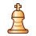
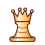
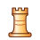
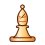
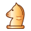
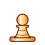
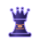
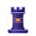
24 Stuecke, Stand 2026-11-06. Noch nicht in die App eingebaut, Flo gibt jedes Stueck frei. Je Stueck links heller, rechts dunkler Grund. Seltenheit: Häufig 4, Selten 10, Episch 7, Exklusiv 3. Liste: assets/shop/vorrat.json.
Figuren-Set · Gedrechselte Laternen mit warmem Glimmen in der Mitte.








Figuren-Set · Mondsilber gegen Nachthimmel, mit goldenen Funkelsternen.
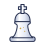
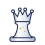
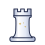
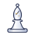
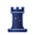
Figuren-Set · Kupfer und Bronze mit einem Zahnrad in jeder Figur.
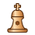
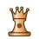
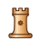
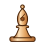
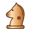
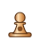
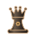
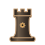
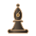
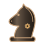
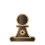
Figuren-Set · Geschliffene Figuren aus Eis und Amethyst.
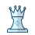
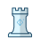
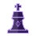
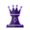
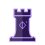
Figuren-Set · Gefaltetes Papier, hell und kohlegrau, mit rotem Siegel.
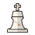
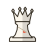
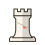
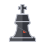
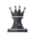
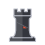
Figuren-Set · Sonder-Set: Gold mit Rubin, Onyx mit Smaragd. Im Shop mit Goldrahmen.
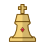
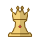
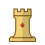
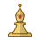
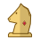
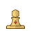
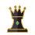
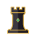
Brett · Warmer Stein mit feiner Koernung.
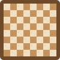
Brett · Tiefblau mit winzigen Sternen.
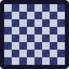
Brett · Zartrosa mit kleinen Blueten.
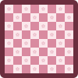
Brett · Tuerkis mit sanften Wellen.
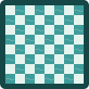
Brett · Kuehles Grau mit Schichtlinien.
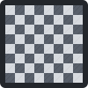
Brett · Helles Holz mit Maserung.
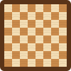
Brett · Gehaemmertes Kupfer mit Nieten im Rahmen.
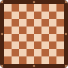
Brett · Nordlicht zieht als Schleier um das Brett.
Brett · Sonder-Brett: Weinrot und Gold mit Kronen im Feld.
Effekt · Zug · Zwei Ringe laufen vom Zielfeld nach aussen.
Effekt · Zug · Funken folgen dem Weg der Figur.
Effekt · Zug · Vier Blaetter drehen sich um das Zielfeld.
Effekt · Zug · Kleine Pixel stieben auseinander.
Effekt · Sieg · Goldene Schnipsel regnen ueber das Brett.
Effekt · Sieg · Ein Lichtstrahl steigt ueber dem Koenig auf.
Effekt · Sieg · Ein Stern zieht mit Schweif ueber das Brett.
Effekt · Sieg · Goldene Kronen fallen nach dem Matt.
Effekt · Sieg · Sonder-Effekt: ein Lorbeerkranz waechst Blatt fuer Blatt, oben die Krone.